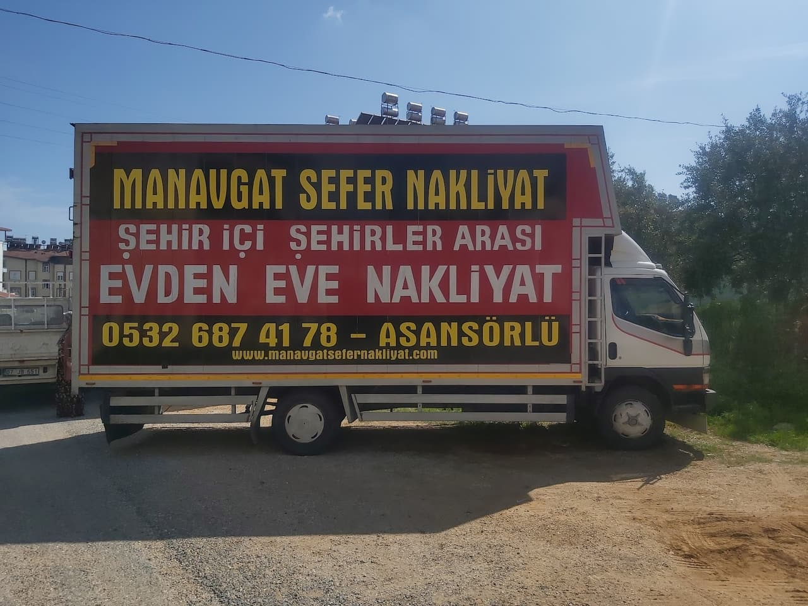
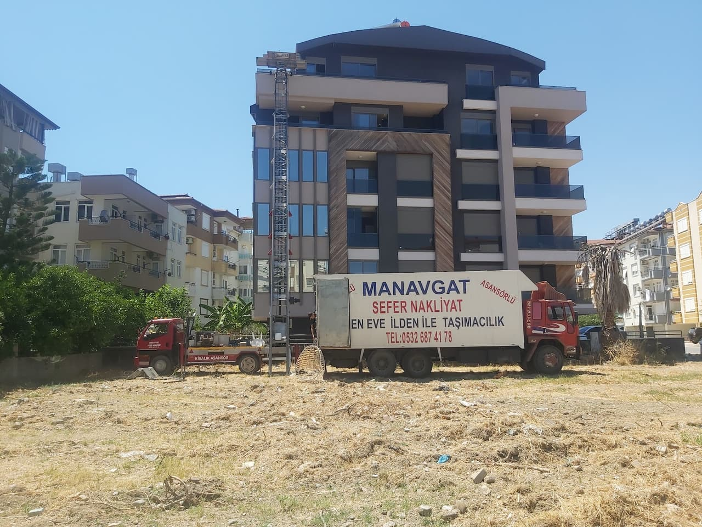
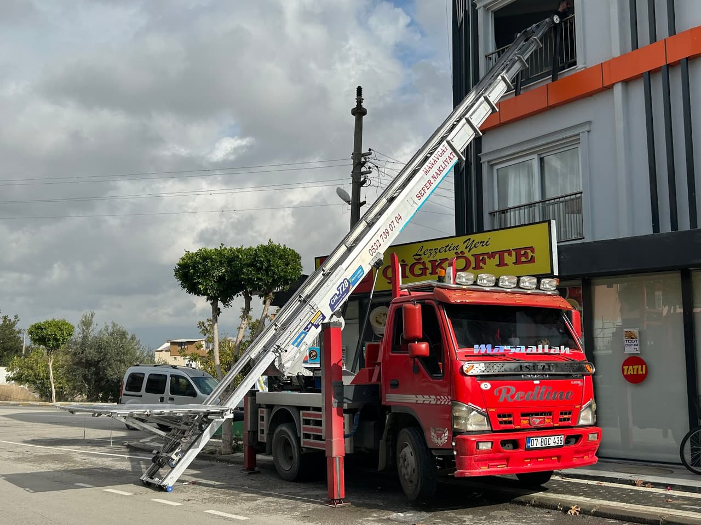
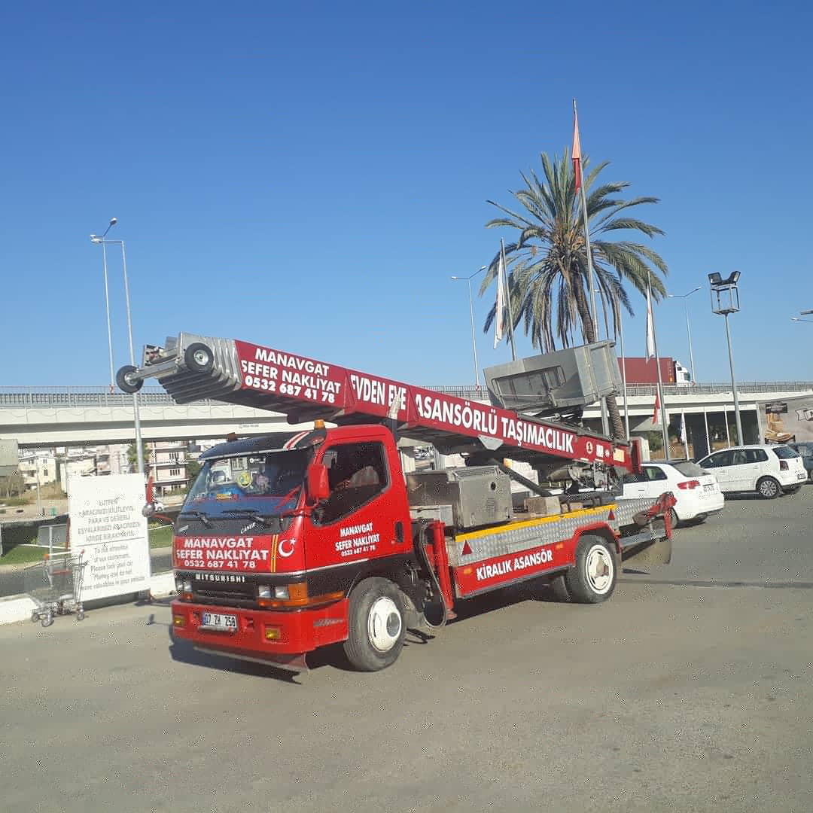

TAŞIMA PLANLAYICI
Taşınmanızı 30 saniyede planlayın
Ev tipini, katları ve mesafeyi seçin: hangi araç, kaç kişilik ekip, asansör gerekip gerekmediği ve tahmini süre ekranda. Ücretsiz ekspertiz için tek dokunuşla gönderin.

Sefer Nakliyat, Manavgat'ta ev ve iş yeri taşımalarında eşyalarınızı tek tek sarıp paketleyerek yeni adresinize ulaştırır. Taşınma öncesi aklınızdaki soruları konuşmak için bizi arayabilirsiniz.
Ev tipini, katları ve mesafeyi seçin: hangi araç, kaç kişilik ekip, asansör gerekip gerekmediği ve tahmini süre ekranda. Ücretsiz ekspertiz için tek dokunuşla gönderin.
Listeyi doldurun; toplam hacim, gereken koli sayısı ve araç önerisi anında hesaplanır. Liste WhatsApp'a hazır gider, eve gelmeden fiyat verilebilir.
Abonelik nakli, adres değişikliği, koli ve son kontrol: hangi işi hangi gün yapmanız gerektiği tek listede.
Daire ve müstakil ev taşımalarında eşyalarınız sarılır, yüklenir ve yeni adresinize teslim edilir.
Mobilya ve eşyalarınız taşıma öncesi paketlenir, sökülmesi gerekenler özenle ayrılır.
Manavgat içinde mahalleden mahalleye yapılan taşımalarda zamanında ve düzenli hizmet.
Antalya ve çevre illerden Manavgat'a ya da Manavgat'tan başka şehirlere eşya taşıma.
Küçük ofis ve dükkân taşımalarında evrak, mobilya ve ekipmanlarınız düzenli şekilde taşınır.
Tüm evi değil de tek bir mobilya ya da beyaz eşya taşımak istediğinizde bizimle görüşebilirsiniz.




Eşyalar sarılıp paketlenerek taşınır. Müşterilerimiz işçiliği gördükten sonra tereddütlerinin geçtiğini söylüyor.
Ekip, söylenen saatte adresinize gelir ve taşıma işine vakit kaybetmeden başlar.
Mobilyalar taşıma öncesi sökülür, eşyalarınızla birlikte yeni adrese taşınır.
Eşyalarınızı yerinde görerek taşıma planı yapılır. Taşınacak eşyaları önceden net aktarmanız, süreci herkes için daha rahat hale getirir.
📍 Yukarı Pazarcı, 4005. Sk. No:12/D, 07600 Manavgat/Antalya
🕑 Pzt–Cmt 24 saat · Paz 07:00–00:00